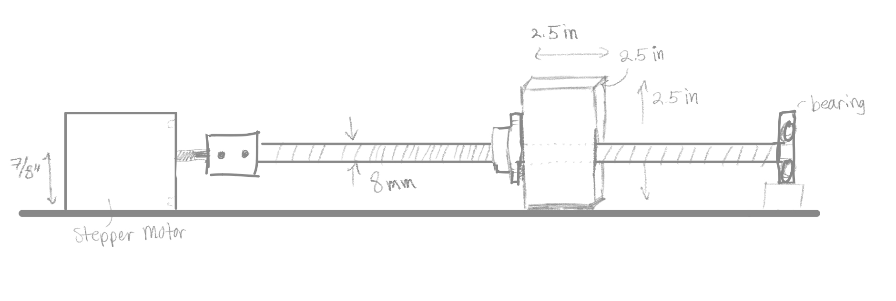
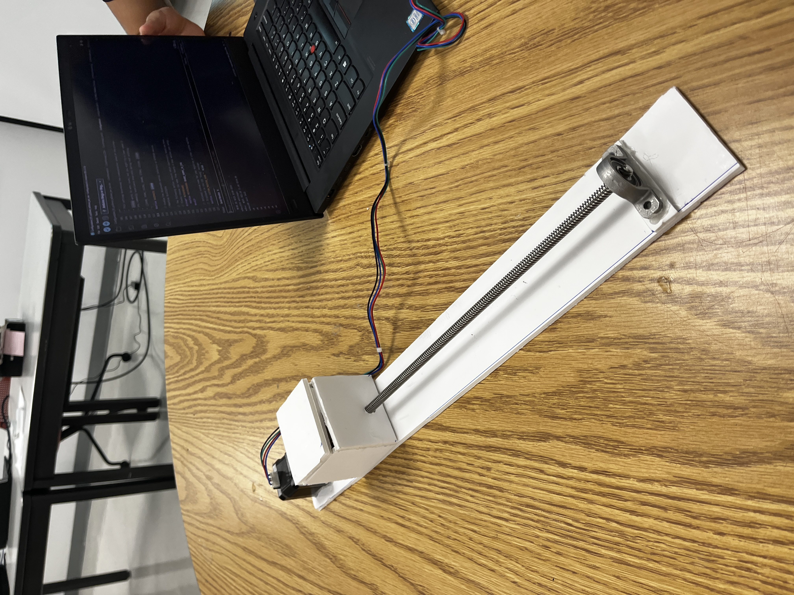
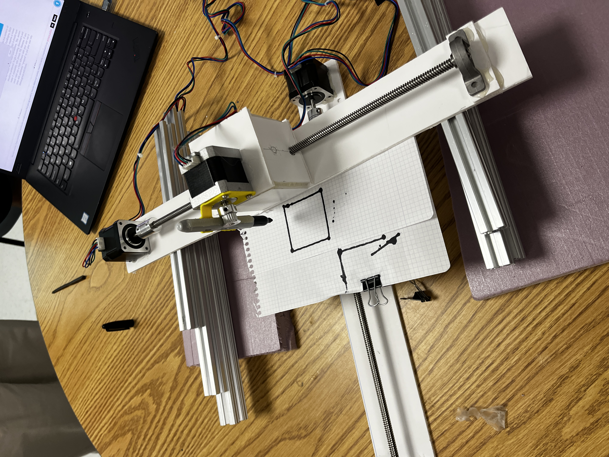

ENG ME 360 / ELECTROMECHANICAL DESIGN
Course project portfolio.
A detailed record of the design work completed for ENG ME 360 at BU. As the semester goes on, this website will reflect the insights, successes, and failures I am challenged with. I hope every reader finds one sentence or photo that inspires them to build their own electromechanical contraption.
ENGME 360 - Electromechanical Design
This course is a hands-on class focused on engineering principles, simulation and physical models in electromechanical design. Main topics include: Arduino sensing and control, principles of electromechanical design, CAE for simulation and porotype testing.
Course description: Over the course of semester, I will be working on two main projects in groups of 4, where we build eletromechanical designs from the ground up.
Portfolio purpose: The following portfolio of the course is an overview of each of the two projects, with a brief narattive describing the objectives, design constraints, and results of each project.
- Design objectives and constraints
- CAD / conceptual design
- Analysis and simulation
- Fabrication and assembly
- Controls / sensing / actuation
- Testing, results, and iteration
Project 1 - Cartesian Motion System
A semester project focused on developing a general Cartesian motion system. The plotter exercise serves as the first prerequisite component of this larger system.
Plotter Exercise
The first exercise is a prerequisite to the larger Cartesian motion system. The work below is the first completed portion of the project.
Goal: 2-dimensional plotter to recreate sketches.
Objectives
- Design and build a one-dimensional linear stage.
- Manually control the linear stage using Arduino IDE.
- Combine a second linear stage to create 2D carteisan motion.
- Successfully recreate any drawing using the 2D plotter using the F-Engrave Gcode converter.
Constraints
- Foam board construction.
- Specific dimensions for proper pen mounting compatibility.
- Maximum two hour and 45 minute class periods to complete all steps.



By mounting a platform to the bottom linear stage and the pen mount to the upper linear stage, my team and I were able to create controllable 2D motion with drawing capabilities. We immediately ran into design challenges as our foam board construction, while adequate for quick prototypes, was not as structurally sound as more durable metal alternatives. We quickly determined that the motor torque was powerful enough to throw the linear stages out of alignment. Given those drawbacks, we eventually found a motor speed that could maintain alignment, while successfully completed any drawing we gave it. Now that the control has been established, our next steps will be to build a stronger foundation around the stepper motors using extruded aluminum.
As this course is ongoing, further subsections will be developed throughout the semester